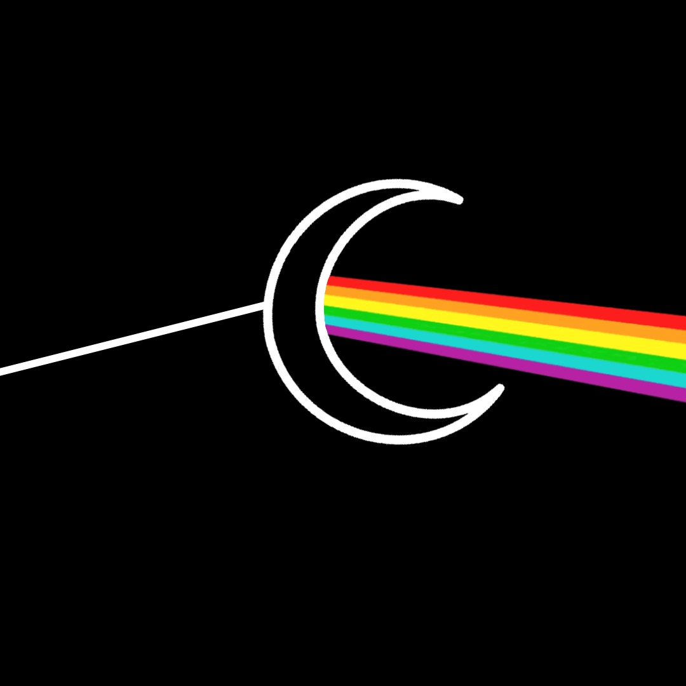
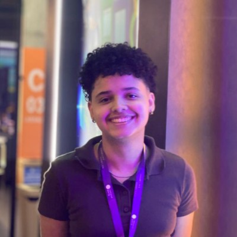

Anna Luiza Gonzaga Fernandes
Scientific Research

See the Sun and Earth from any lunar south pole landing site, and know when you'll have power and a link home.
See the project
Scientific Research

Developer
Pitch & Presentation
Pitch & Presentation

Scientific Research

Developer